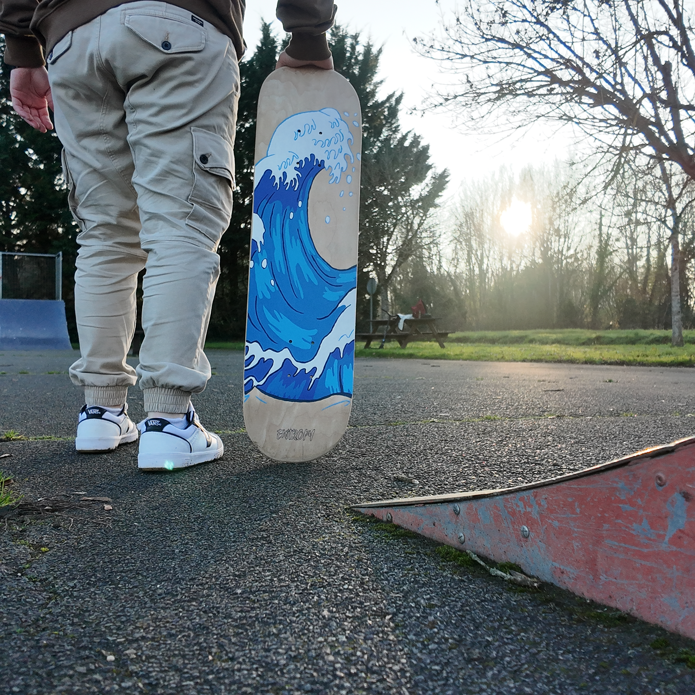
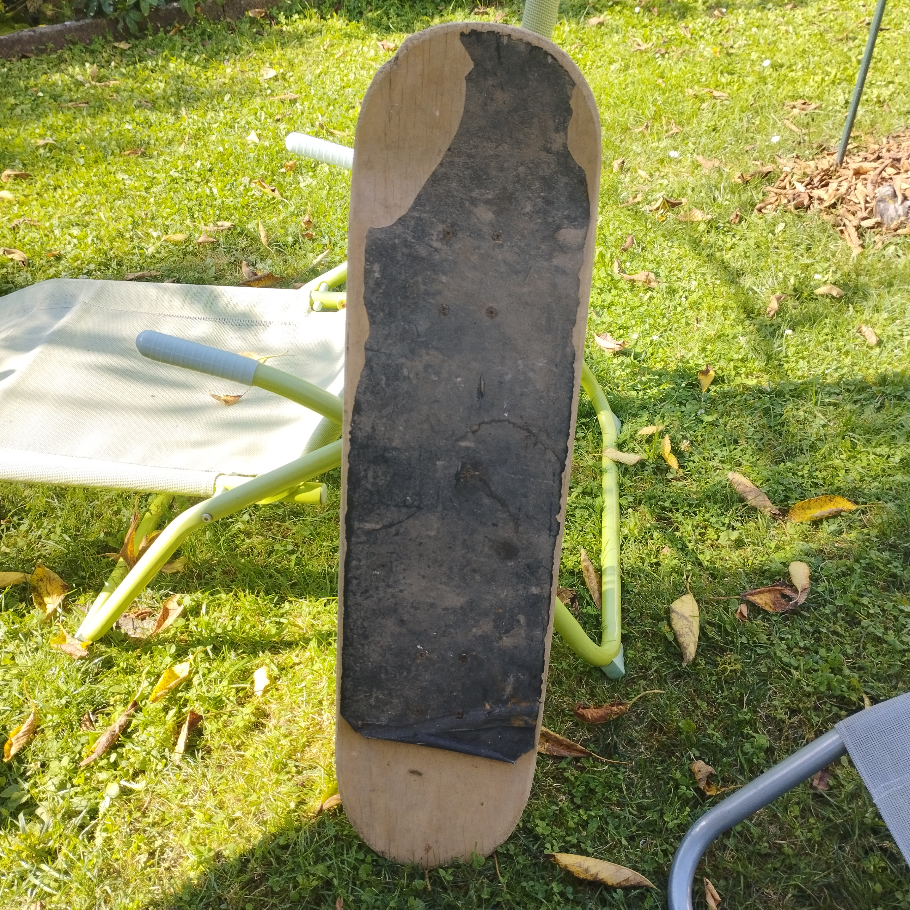
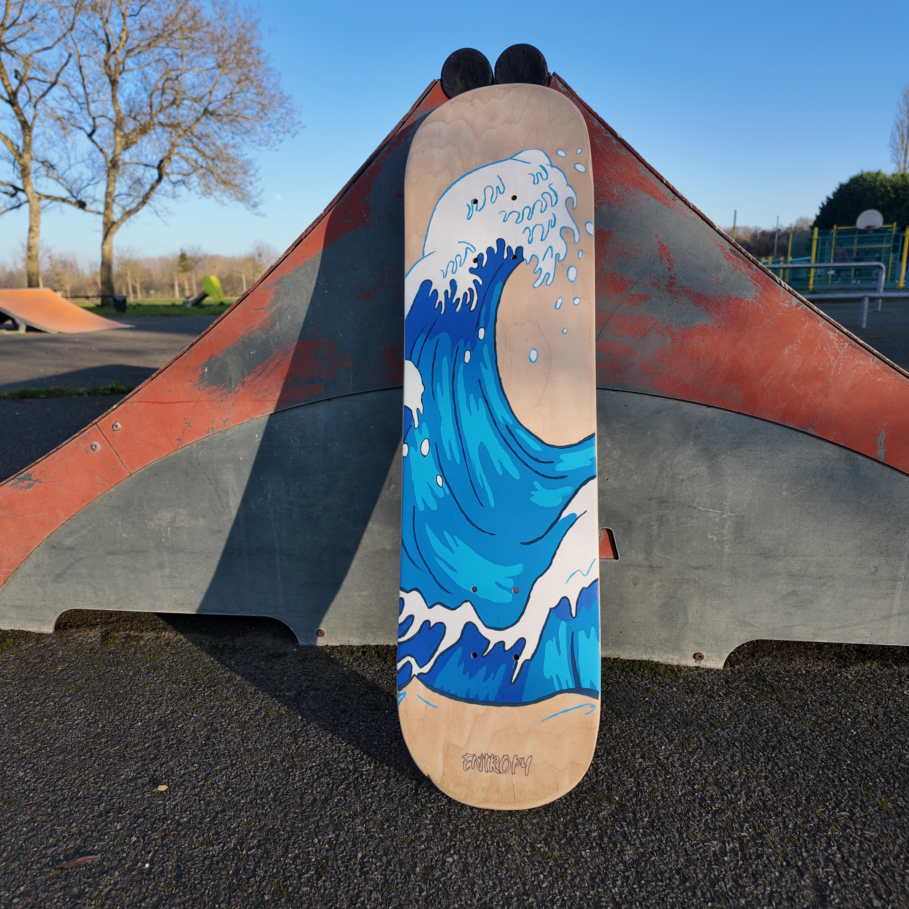

Waves
Custom inspiré de l’univers marin et des sports de glisse.
Source d’inspiration
Ayant souvent passé mes vacances à la mer, cet environnement m’a toujours marqué. C’est un lieu où se croisent naturellement différents univers de la ride : surf, skate, longboard, skate cruiser, roller.
Je trouve que le bord de mer est l’un des endroits les plus imprégnés de cette culture de glisse, à la fois libre, créative et tournée vers le mouvement.
C’est de cette atmosphère qu’est née l’envie de lier le monde du surf à celui du skateboard, en transposant l’énergie et la fluidité des vagues sur cette planche de skate.
Avant / Après

La vague est un symbole que je trouve particulièrement fort : elle n’est jamais figée, jamais identique, toujours en mouvement. Elle impose son rythme, mais laisse aussi une grande place à l’improvisation.

Le skateboard et le surf partagent cette même relation au corps et à l’espace : un équilibre fragile, une lecture constante du terrain, et cette sensation de glisse qui efface momentanément le reste.

Si ma mémoire est bonne, c'est mon tout premier skate taille adulte. C'est celui sur lequel j'ai appris à rouler (juste rouler pour l'instant...) Il m'a accompagner sur quelque session en park, bien que mes sessions étaient composées à 90% de trotinette freestyle (le reste étant du rollers freestyle et du skate pour varier le plaisir)

Avoir fait de cette première planche sur laquelle j'ai appris à rouler, un custom relatif à mes nombreuses vacances à la mer est pour moi très significatif.